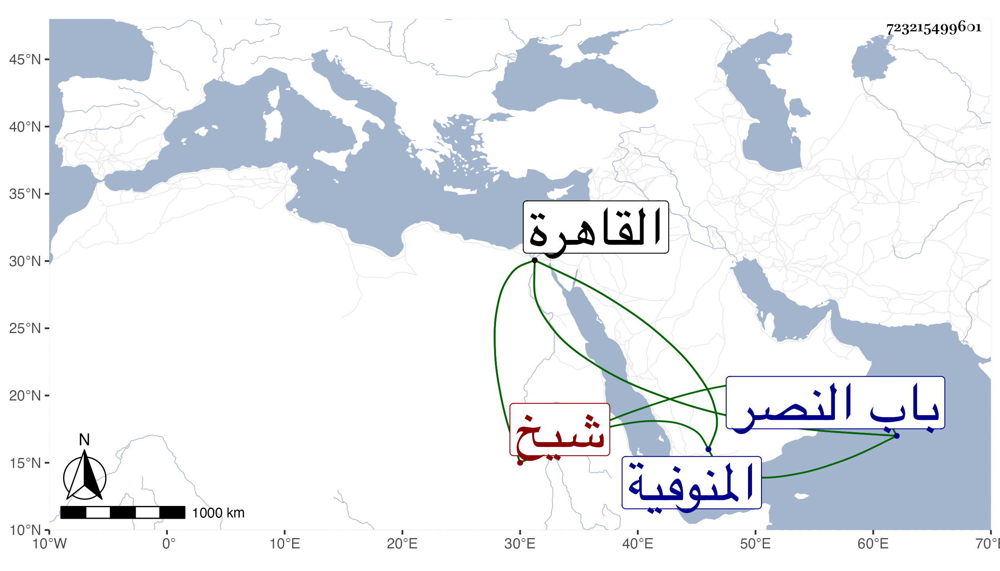

0902Sakhawi.DawLamic.ITO20230111-ara1.EIS1600.723215499601
Biography ID: 723215499601
532
غيث بن ندى بن علي بن أبي الوحش أخو سليمان الماضي ويعرف بابن نصير الدين شيخ عرب المنوفية . كان ممن يذكر بالظلم والشح مع إظهاره التدين وانتمائه للشيخ مدين وجره له ولزاويته بل ولجماعة من أتباعه في كل سنة القمح الكثير وغيره بحيث كان له إليه الميل الزائد وربما يقيم في الزاوية مدة اجتهاده في إتلاف من يعلمه من قطاع الطريق ، وتجرع غصة قتل ابنه ولم يمكث بعده سوى اثنين وعشرين يوما ، ثم مات بالقاهرة عند يشبك الفقيه في يوم الاثنين عاشر رجب سنة ست وستين عن نحو السبعين وصلى عليه بمصلى المؤمني ودفن خارج القاهرة من جهة باب النصر عفا الله عنه وإيانا .
